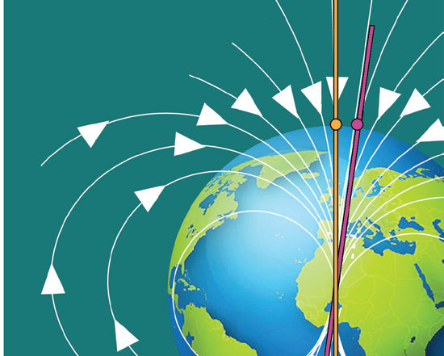
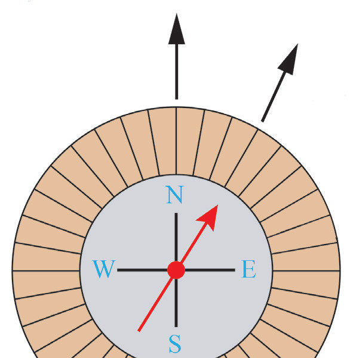
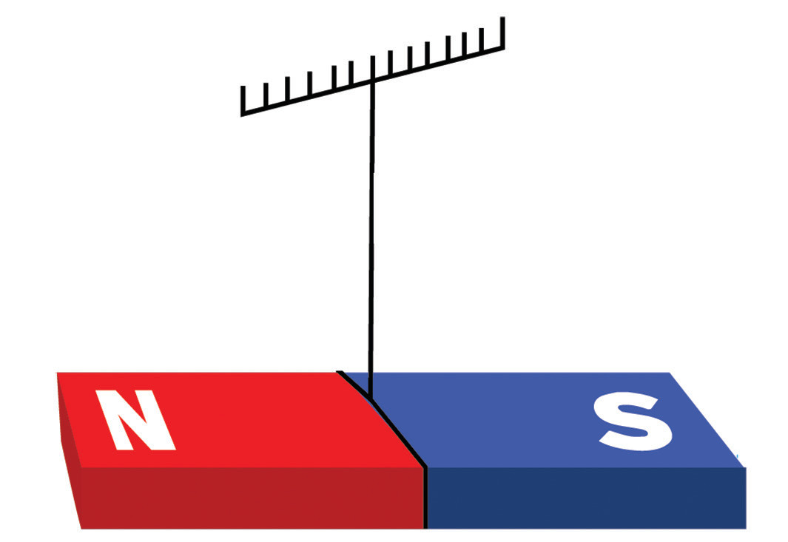
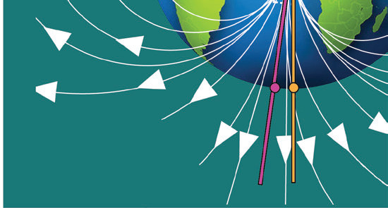

and south geographic poles as defined by its axis of rotation, and the north and south magnetic poles that are defined by its magnetic field. The magnetic pole in the Northern Hemisphere is magnetically a south pole called the Magnetic South Pole (MSP), and in the Southern Hemisphere, the magnetic pole is called the Magnetic North Pole (MNP) as shown in Figure 3.45.

Direction of the Earth’s magnetic field
Magnetic fields have both magnitude and direction. The SI unit for magnitude of a magnetic field is the Tesla, T. The magnitude of the Earth’s field varies from one location to another, ranging from 25µT to 65µT. A compass may be used to determine the direction of the Earth’s magnetic field. A compass is a device with a magnetised needle that is free to rotate in a horizontal plane and align itself with the horizontal component of the Earth’s magnetic field. The head of a compass needle is a magnetic north pole, and the tail is a magnetic south pole.
The compass needle points toward the north pole, which means it will point toward the Earth’s MSP. Therefore, a compass needle points in the general north direction of the Earth as shown in Figure 3.46. For this reason, the magnetic north pole of the compass needle is referred to as a north-seeking pole, and the general direction it indicates is often called the “magnetic north".

When a magnet is hung so that it can swing freely in a horizontal direction, it will move back and forth for a short time before it comes to rest in an approximate N–S direction. The magnet comes to rest with its axis in a vertical plane called the magnetic meridian.

